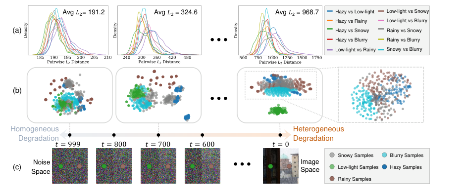

I am a PhD candidate at Sun Yat-sen University (Shenzhen Campus),
advised by Prof. Zhi Jin.
Before that, I received my degree working on computer vision and pattern recognition.
My research interests center around low-level vision and
learning with limited data, including
image restoration, diffusion models,
image matting, and semi-/self-supervised learning.
Broadly, I am interested in how to recover faithful visual signals from partial and imperfect observations.
I am open to collaboration and always happy to discuss research via email.
🔥 News
[2026.06] 🎉 Two papers accepted at IEEE TIP.
[2026.04] 🎉 Paper accepted at IEEE TMI.
[2026.04] 🎉 Paper accepted at IEEE TIP.
[2025.11] 🎉 Paper accepted at AAAI 2026.
[2025.07] 🎉 Paper accepted at ACM MM 2025.
[2025.07] 🎉 Paper accepted at ICCV 2025.
[2025.07] 🎉 Paper accepted at IEEE TIP.
[2024.09] 🎉 Paper accepted at ESWA.
[2024.07] 🎉 Paper accepted at ECCV 2024.
[2023.07] 🎉 Paper accepted at IEEE TCSVT.
[2023.06] 🎉 Paper accepted at ICML 2023.
📑 Selected Publications
Bold = my name · ★ = first-authored top-tier venue.
★

IEEE TIP · 2026
Virtual Consistency Model for All-in-one Image Restoration